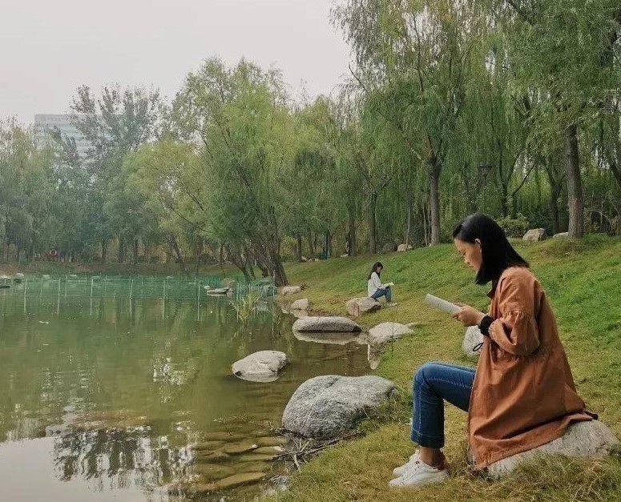

天一湖-读书
“浴乎沂，风乎舞雩，咏而归"。”

在河中医的时光里，读书的身影，也许是你，也许是我也许是他，从医之路阻且长，长风万里，
只待你的加入。读书之余，怡然散步，清风拂面，觅得欣然开怀流身影。身处湖边，当五六点温柔的日光中被一点点的拉长，
那些黏在身上和衣服上的水滴，我们享受着傍晚太阳的余温，水滴一点点的变小，一点点的蒸发在空气中，风吹起衣角，
都是水草腥甜腥甜的味道。生活的美好就如此
。
在河中医的时光里，读书的身影，也许是你，也许是我也许是他，从医之路阻且长，长风万里， 只待你的加入。
读书之余，怡然散步，清风拂面，觅得欣然开怀流身影。身处湖边，当五六点温柔的日光中被一点点的拉长，
那些黏在身上和衣服上的水滴，我们享受着傍晚太阳的余温，水滴一点点的变小，一点点的蒸发在空气中，风吹起衣角，
都是水草腥甜腥甜的味道。生活的美好就如此。
花香迎面，长柳拂地。
蓝天与碧水相映，青草与大地相衬。